Liczby zespolone \(z, w \in \mathbb{C}\), z
argumentami odpowiednio: \(\alpha \) i \(\beta \), Możemy zapisać w postaci trygonometrycznej: 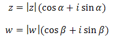
Obliczymy teraz iloczyn tych liczb zapisanych w postaci trygonometrycznej: 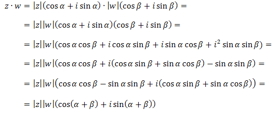 Ostatnia równość wynika ze wzorów trygonometrycznych na
cosinus sumy kątów oraz na
sinus sumy kątów.
Powyższy rachunek pokazuje, że przy
mnożeniu dwóch liczb zespolonych \(z, w \in \mathbb{C}\) otrzymujemy liczbę zespoloną, której:
- moduł jest iloczynem modułów liczb \(z\) oraz \(w\),
- argument jest sumą argumentów liczb \(z\) oraz \(w\).
Wynika stąd następujący wzór:
Wzór de Moivre'a
Dla dowolnej liczby \(z\in \mathbb{C} \) zachodzi następujący wzór: 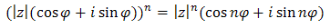
Przy pomocy tego wzoru można szybko podnosić liczby zespolone do dowolnie dużych
potęg.
Dana jest liczba \(z=1-i\). Oblicz \(z^{100}\).
Zacznijmy od
zapisania liczby zespolonej \(z=1-i\) w postaci trygonometrycznej.
Zaznaczmy ją w układzie
współrzędnych:
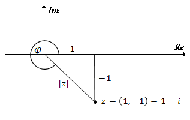 Obliczamy moduł: \[|z|=\sqrt{1^2+(-1)^2}=\sqrt{2}\] Obliczamy
argument: 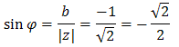 Kąt \(\varphi\) leży w IV ćwiartce układu współrzędnych, zatem:
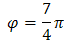
Argument można było również odczytać z układu współrzędnych. Widać, że
\(\varphi = 3 \cdot 90^\circ + 45^\circ = 315^\circ\).
Zapiszmy teraz liczbę
\(z=1-i\) w postaci trygonometrycznej: 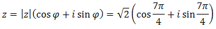 Korzystając ze wzoru de Moivre'a liczymy, że: 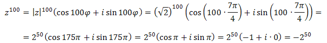
Dana jest liczba \(z = -1+\sqrt{3}i\). Oblicz \(z^{67}\).
Zaznaczamy liczbę \(z = -1+\sqrt{3}i\) w układzie współrzędnych: 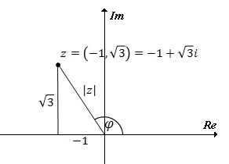 Teraz obliczamy moduł: \[|z|=\sqrt{(-1)^2+(\sqrt{3})^2}=\sqrt{4}=2\] Obliczamy
argument: 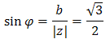 Kąt \(\varphi\) leży w II ćwiartce układu współrzędnych, zatem:
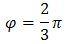
Argument można było również odczytać z układu współrzędnych. Widać, że
\(\varphi = 90^\circ + 30^\circ = 120^\circ\).
Zapiszmy teraz liczbę \(z =
-1+\sqrt{3}i\) w postaci trygonometrycznej: 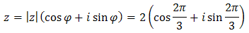 Stosując wzór de Moivre'a obliczamy, że: 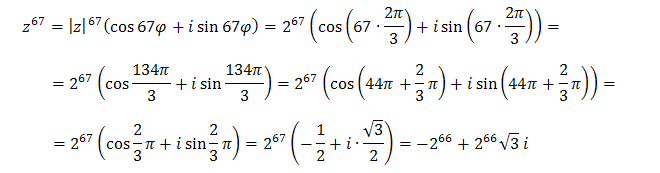